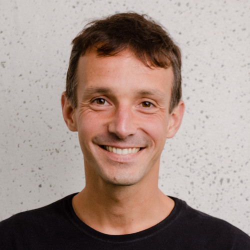

Sua carreira de sucesso em tecnologia começa aqui. Agora.
Com atividades presenciais e online, mentorias individuais e desafios práticos,
a Trybe é a escola do futuro e para o futuro que acelera sua carreira em desenvolvimento de software em até 12 meses.
E o melhor? Você não paga nada até conseguir um trabalho com uma remuneração de, no mínimo, R$ 3.000,00 por mês.
A Trybe é para todos, inclusive para VOCÊ.
Para você que já é estudante de computação, para você que se interessa pelo assunto e até mesmo para você que está pensando em mudar de carreira e ainda não conhece nada
A Trybe funciona para qualquer pessoa que queira uma carreira de sucesso em tecnologia.
E QUE TENHA MUITA VONTADE E DEDICAÇÃO!
"Eu trabalho com Marketing e não tinha nenhuma formação ou experiência na área e consegui entrar na Trybe para me tornar desenvolvedor de software."
Conrado MedeirosAluno da Turma de Setembro - BH
"Eu não sabia nada de programação! Estudei os conteúdos gratuitos disponibilizados, consegui fazer o processo e passar. Estou aqui firme e forte para conseguir virar um desenvolvedor."
Gabriel dos SantosAluno da Turma de Setembro - BH
"Sou estudante de Engenharia Química e entrei na Trybe sem nenhuma experiência na área e estou animado para me tornar desenvolvedor."
Anderson BolivarAluno da Turma de Setembro - BH
Quem somos e por que estamos aqui?
Fundamos a Trybe porque acreditamos que qualquer pessoa que tenha muita vontade de vencer, independente da formação ou da condição financeira, é capaz de ter uma carreira de sucesso.
Matheus Goyas,
CEO e Co-fundador da Trybe
Temos a premissa de fazer os estudantes viverem na prática desafios idênticos aos enfrentados na vida real. Nosso compromisso é tão grande com o sucesso, que a Trybe só ganha se os nossos estudantes estiverem ganhando bem.
João Duarte,
CTO e Co-fundador da Trybe
Como é a formação?
Atividades online, offline e apoio individual para cada aluno
Experiência mão na massa, lidando com desafios e problemas reais
Equipe dedicada a te ajudar a encontrar a oportunidade profissional perfeita para você
Vivência das rotinas e processos reais de desenvolvimento das empresas de ponta
Quer saber mais sobre nossa formação?
Quem conhece e confia na trybe

"Vivi na pele a dificuldade de encontrar gente boa em tecnologia na época de Peixe Urbano e vejo de perto a dificuldade que as empresas do
portfólio da Canary enfrentam. Esse problema é muito relevante e acredito muito no time da Trybe para oferecer uma formação realmente transformadora."
Júlio Vasconcellos,
Fundador do peixe Urbano e Canary
"A Trybe está construindo a melhor solução para um problema importante: a formação de qualidade para desenvolvedores de software e a conexão com as empresas de
tecnologia que buscam os melhores profissionais. Conheço os fundadores da Trybe há muitos anos e fico entusiasmado ao ver um time de fundadores tão experiente
dedicado à formação de talentos e o sucesso na carreira destes profissionais."